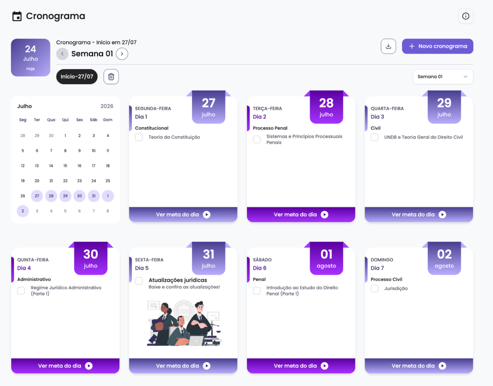
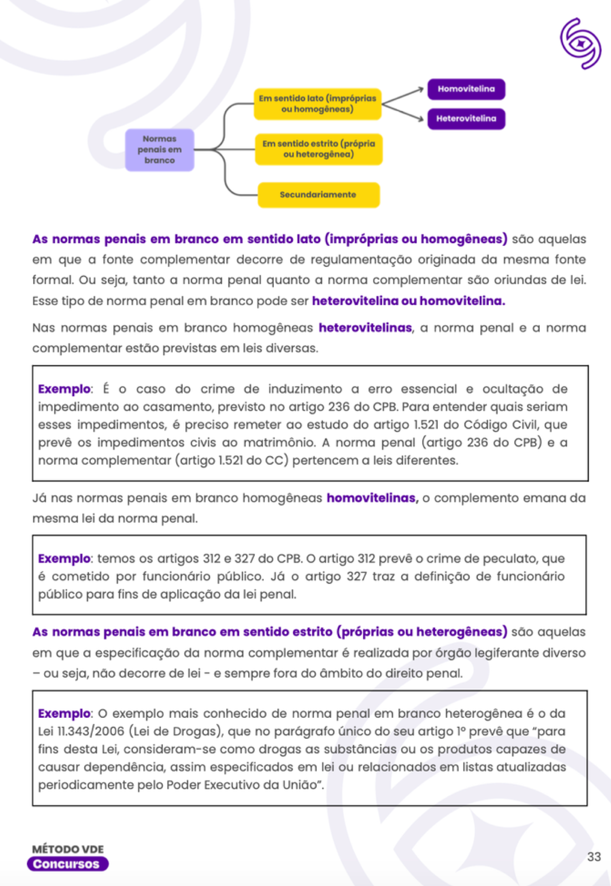
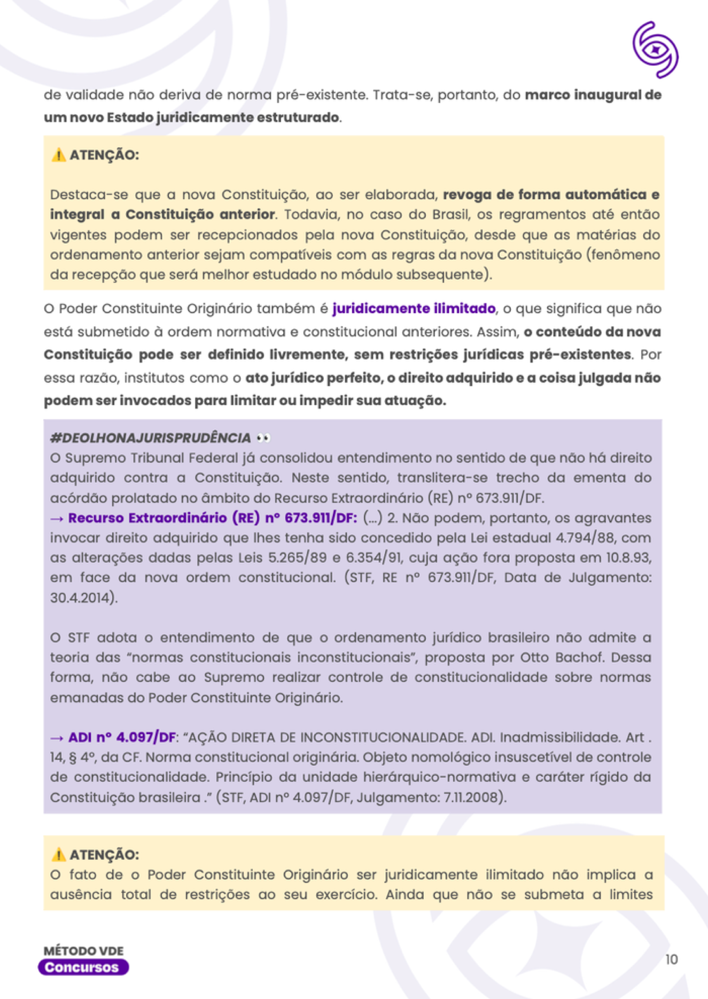
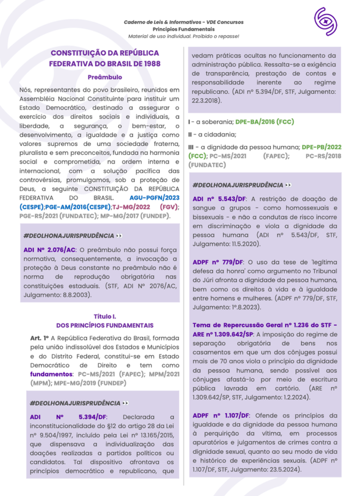
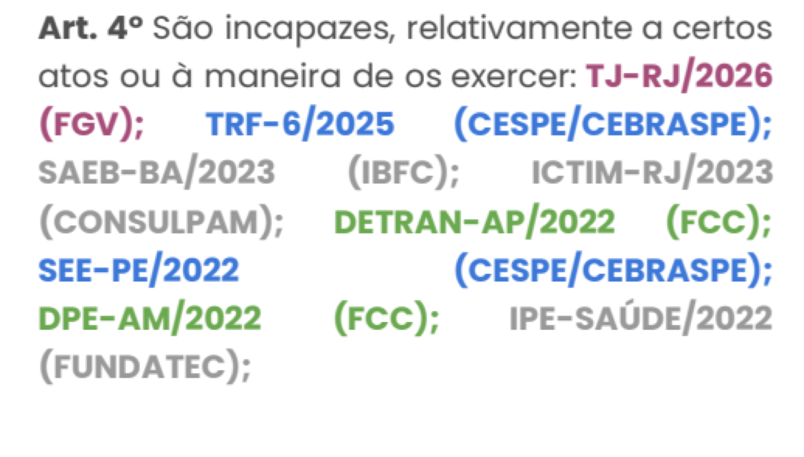
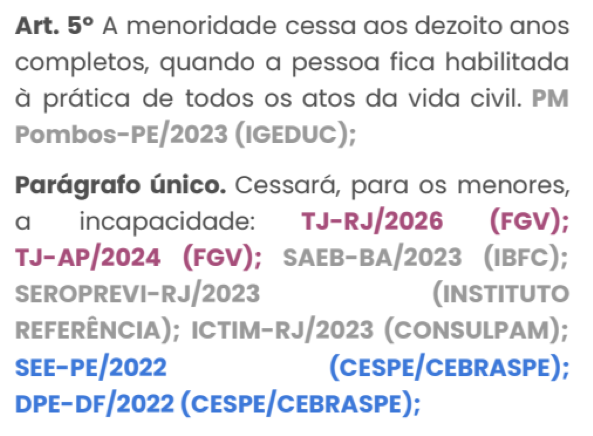

Analista judiciário · TRT · edital previsto pros próximos meses
Abra pelo nome, pelo cargo e pelo tribunal. Confirme que ela recebeu e leu o raio-X: "você conseguiu ler o documento que eu te mandei?"
Não comece falando de curso nem de preço. As quatro primeiras telas são sobre ela.
Leia os oito campos em voz alta, sem comentar. Só depois pergunte: "está tudo certo?" Corrija na hora o que ela disser.
O objetivo do slide é ela sentir que a conversa foi preparada pro caso dela.
Leia a frase do diagnóstico e pare. Pergunte "faz sentido pra você?" e espere a resposta. É aqui que ela concorda com o problema, e sem isso nada do resto vende.
Os quatro campos de baixo são a sua cola: momento, nível, curso e prazo. Não precisa ler todos em voz alta.
Este slide troca de conteúdo conforme o gargalo que ela marcou no quiz. Leia o título, confirme com ela ("é isso que mais te incomoda hoje?") e só então mostre a solução.
Se ela marcou "todas acima", puxe a que apareceu com mais força na conversa até aqui.
A linha roxa é o tempo que ela declarou no quiz. A dourada é o recomendado. Mostre a diferença sem cobrar: a decisão é dela.
Se ela marcou menos de 1 hora por dia, não venda prazo. Trate do realismo primeiro: onde cabe a segunda hora na rotina dela.
Leia a frase inteira, devagar, e use o nome dela no meio: "é isso que eu quero montar com você". É a tela que dá nome ao que vem depois, e a única coisa que ela tem que fazer é ser dita bem.
Duas coisas pra dizer em voz alta aqui, que saíram da tela pra não poluir: são 12 meses de acesso com tudo atualizado, e quem estuda pra analista cobre também o que cai pra técnico, o contrário não acontece.
Só o curso dela aparece. Diga por que, em uma frase ("você quer TRT, então é este"), aponte as duas disciplinas em dourado e siga. Não leia a lista inteira.
Se ela marcou "qualquer tribunal", pergunte com qual matéria tem mais afinidade, Trabalho ou Penal, decida na conversa e troque a grade antes da call.
O cronograma diz o tema do dia. Dentro do tema, a ordem é sempre esta:
Este é o slide que mais vende. Percorra os cinco passos em ordem, rápido, e diga que os próximos slides mostram cada um por dentro da plataforma.
Para quem marcou "leio muito e resolvo pouco": pare no passo 3 e mostre que questão e leitura acontecem no mesmo dia.

Mostre a tela antes de explicar. Depois diga qual linha do cronograma base é a dela, a mesma que apareceu na tela 4.
O cronograma personalizado é a resposta pronta pra "e se sair um edital agora?".


O ponto aqui é aprofundamento. Quem vem de resumo e de caderno de cursinho vai perguntar o tamanho: cada tema tem de 30 a 50 páginas.
Use este slide quando ela comparar com material de outro curso. O argumento é profundidade e atualização, e o último marcador é o que mais tranquiliza quem tem medo de estudar lei revogada.



Amplie a marcação de incidência na imagem e leia um exemplo em voz alta. Este é o slide que responde "não sei o que a banca cobra".
O banco próprio é economia concreta: some o que ela paga hoje de assinatura de questões e desconte do investimento quando chegar no preço.
Quem quer velocidade com qualidade não passa o dia assistindo vídeo. Por isso o VDE Tribunais concentra a videoaula onde ela realmente resolve:
Slide obrigatório pra quem marcou medo das não jurídicas ou errou Português e RLM no teste. Diga a frase com confiança: "nessas quatro você tem videoaula do zero".
Se ela perguntar por videoaula de direito, explique a escolha: leitura mais questão avança mais rápido que vídeo.
Aqui você responde "como eu sei que está funcionando?". O simulado dá a nota todo mês, e a redação treina a parte que ninguém treina sozinho.
A redação não tem correção individual. Ela vale nos dois cursos e vem com gabarito comentado. Se ela perguntar por correção de professor, diga isso com clareza: o ganho é o treino e a comparação com o padrão de resposta.
O VDE me ajuda se eu já estiver com edital aberto?
SIMÉ o cronograma personalizado: você monta a reta final com a matéria do edital e o material continua o mesmo.
Use quando ela disser que a prova está perto. Não prometa aprovação em reta final: prometa cobertura do edital no tempo que existe e base pro próximo.
Só chegue aqui depois de ela concordar com o diagnóstico e ver o método. Se ainda houver dúvida do método, volte, não avance.
Leia item por item, sem correr. A soma é a âncora: é ela que faz o preço real parecer o que é.
Se ela paga assinatura de plataforma de questões hoje, lembre aqui do valor que ela já gasta por mês.
com 12 meses de acesso, com tudo atualizado.
Diga o valor e fique quieto. Deixe ela reagir primeiro. O próximo slide é a condição de pagamento.
Os 5% são o seu gatilho de fechamento, e só entram quando você já pediu a decisão. Abrir o desconto antes disso queima a carta.
Confirmar com a coordenação antes da conversa: o valor da parcela em 12x, se os 5% valem também no parcelado, e se existe cupom ou campanha na semana. O valor à vista aqui é R$ 1.997,00 menos 5%.
O cargo não acaba em um ano. O investimento acaba.
O investimento é o da condição da tela anterior. O retorno é o que ela mesma declarou no quiz que passaria a ganhar. Diga isso com essas palavras, porque o número é dela, não seu.
Não prometa aprovação nem prazo de posse. A conta é de ordem de grandeza, e é assim que você apresenta.
Feche pedindo a decisão, sem rodeio: "faz sentido a gente começar hoje?". Se a resposta for sim, mande o link antes de encerrar a chamada.
Se for não, pergunte o que ficou faltando e anote no CRM junto com o código do raio-X dela.